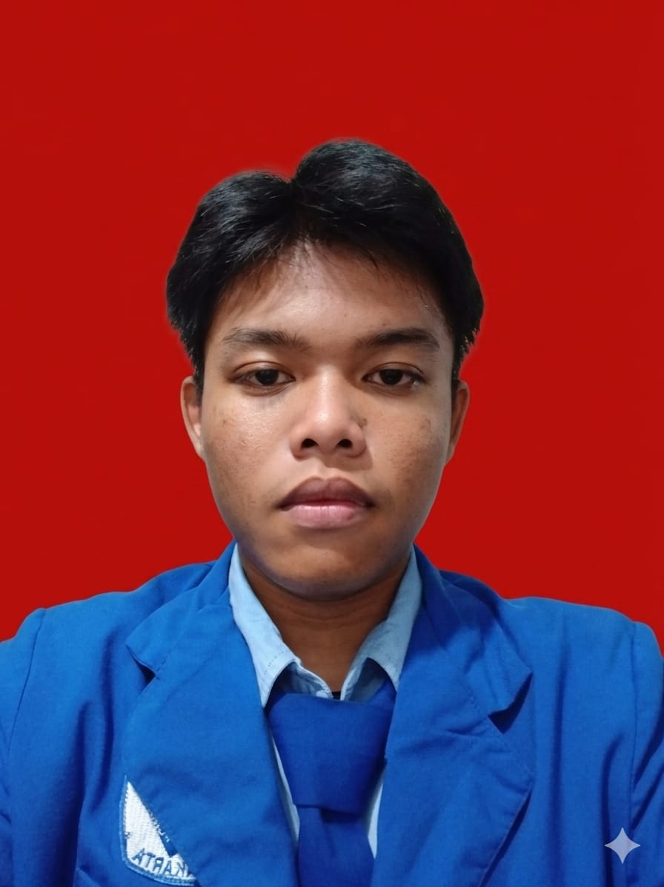

Halo, Saya
M. Zakwan Syafiq
TKJ Student | Network Cabling Specialist - SMK 3 Perguruan Cikini
Berdedikasi dalam dunia teknologi jaringan komputer, menguasai teknik pengkabelan terstruktur (UTP/RJ45), serta pemecahan masalah perangkat keras & jaringan fisik.
Tentang Saya
“Saya adalah siswa jurusan Teknik Komputer dan Jaringan (TKJ) di SMK 3 Perguruan Cikini. Saya memiliki pemahaman dan keahlian praktis dalam pembuatan serta pengujian kabel jaringan (crimping kabel UTP dengan konektor RJ45, standar Straight & Cross). Saya bersemangat untuk terus memperdalam ilmu infrastruktur jaringan dan teknologi komputer.”
Dengan pengalaman praktikum langsung di laboratorium sekolah, saya terbiasa teliti, rapi, dan bertanggung jawab terhadap standar operasional konektivitas fisik jaringan.
Pendidikan & Akademik
Latar belakang institusi pendidikan formal saat ini.
SMK 3 Perguruan Cikini
Teknik Komputer dan Jaringan (TKJ)
Menempuh pendidikan kejuruan di SMK 3 Perguruan Cikini dengan fokus mendalam pada administrasi sistem jaringan, konfigurasi perangkat router/switch, manajemen kabel jaringan terstruktur, serta pemeliharaan hardware & software komputer.
Keahlian & Kompetensi
Keterampilan teknis dan praktis di bidang Jaringan Komputer.
Crimping Kabel UTP
Keahlian merakit konektor RJ45 dengan standar pengkabelan Straight-Through dan Crossover menggunakan tang crimping secara presisi.
Testing & Pengujian Kabel Jaringan
Menguji kontinuitas dan kualitas sambungan kabel menggunakan LAN Tester untuk memastikan transmisi data berjalan normal.
Dasar-Dasar Infrastruktur Jaringan LAN
Pemahaman fundamental topologi jaringan lokal (LAN), switch, hub, pengalamatan IP, serta perancangan jalur kabel fisik yang rapi.
Troubleshooting Konektivitas Fisik
Mendiagnosis dan memperbaiki masalah koneksi fisik jaringan, kendala kabel putus, serta troubleshooting port koneksi jaringan.
Hubungi Saya
Tertarik berdiskusi seputar jaringan atau kolaborasi? Jangan ragu untuk menghubungi saya.